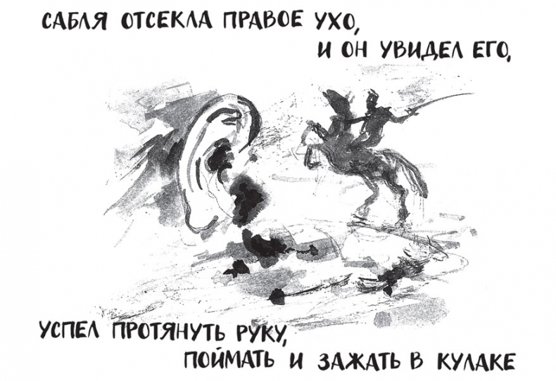

Setting: The novel takes place in 1919 Kyiv, amidst the chaos of the Ukrainian revolution and the harsh realities of the Res Army's occupation. The presence of the Red Army is portraeyd from a Ukrainian pov as an occupation and the time of utmost chaos. Other competing forces on the margins of the novel are the Whites (trying to restore the empire), Hetman Skoropadsky's brief Ukrainian statehood that the Red Army destroyed (April 29, 1918 – December 14, 1918).
Plot: The plot follows Samson Kolechko, a newly recruited police investigator, as he tackles his first investigation involving a series of murders and a enigmatic stolen object.

Atmosphere: The story is described as a droll, surreal, and deeply atmospheric crime story that captures a dangerous, uncertain era of Ukrainian history.